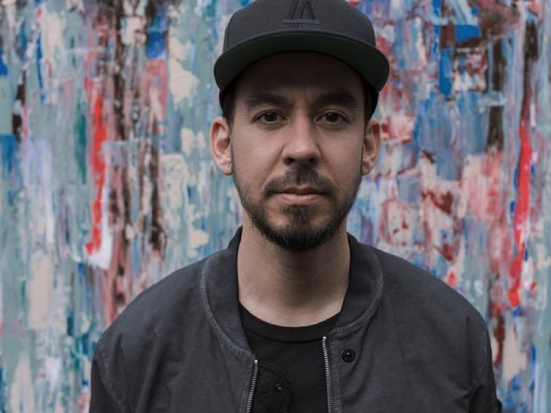

|
Mike Shinoda: A Journey Through His Life and Career  |
||
|
Early Life Mike Shinoda was born on February 11, 1977, in Agoura Hills, California. He is of Japanese-American descent and was raised in a culturally diverse environment. Shinoda developed an interest in music at an early age and began taking piano lessons when he was just six years old. His passion for music grew, leading him to explore various genres, including jazz, classical, and eventually rock and hip-hop. Education Mike attended Agoura High School, where he met future bandmates Brad Delson and Rob Bourdon. After high school, he pursued a degree in Illustration and Graphic Design at the Art Center College of Design in Pasadena, California. During his college years, Shinoda continued to hone his musical skills, particularly in production and mixing. Formation of Linkin Park In 1996, Mike Shinoda co-founded the band Xero with Brad Delson and Rob Bourdon, which would later become Linkin Park. Shinoda played a pivotal role in the band's development, serving not only as a vocalist and musician but also as a producer and creative director. His ability to blend different genres of music helped define Linkin Park's unique sound. Career with Linkin Park Mike Shinoda's contributions to Linkin Park extend beyond his role as a rapper and musician. He was heavily involved in the production of the band's albums, including the critically acclaimed "Hybrid Theory" and "Meteora." Shinoda's artistic skills were also showcased in the band's album art and music videos, many of which he designed or directed.
Solo Projects and Fort Minor In 2005, Mike Shinoda launched a solo project under the name Fort Minor. The project allowed him to explore his hip-hop roots more deeply and resulted in the release of the album "The Rising Tied," which featured hits like "Where'd You Go" and "Remember the Name." Shinoda's solo work showcased his versatility as an artist and producer.
Personal Life Mike Shinoda is married to Anna Hillinger, a writer. The couple has two children. Shinoda is known for his dedication to his family, as well as his philanthropic efforts, particularly through the band's charitable foundation, Music for Relief. Artistic Endeavors Apart from music, Mike Shinoda is a talented visual artist. He has held art exhibitions and designed artwork for various projects, including album covers and merchandise. His art style often incorporates elements of his Japanese heritage, as well as his experiences in the music industry. Legacy and Impact Mike Shinoda's influence on the music industry is significant. As a key member of Linkin Park, he helped shape the sound of the early 2000s and continues to inspire new generations of musicians. His ability to merge different musical styles has made him a versatile and respected figure in both the rock and hip-hop communities. |